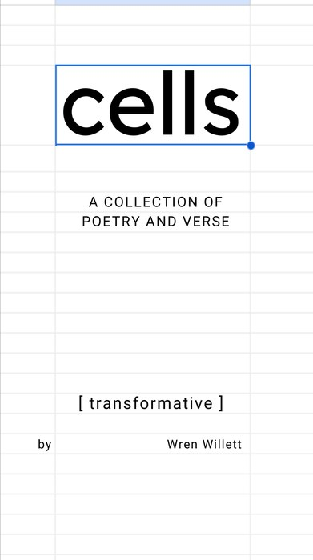
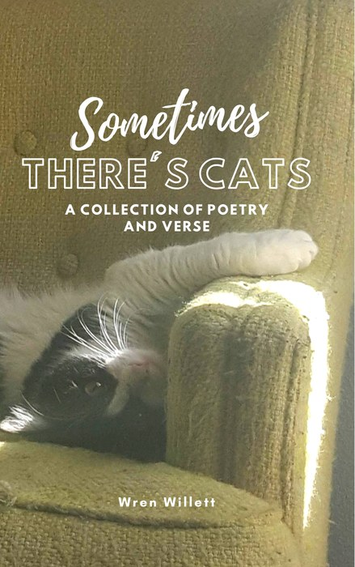
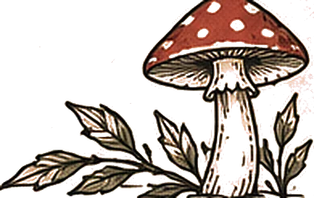
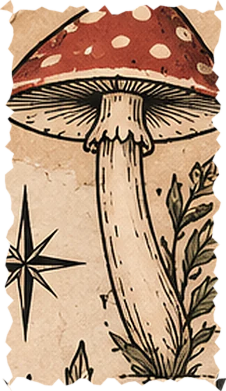

No. 01 · Writing
Poetry
Two self-published collections about family, home, love and the small moments in between.

Cells
2024 · 93 pages · Paperback
Poems about family, womanhood and life, and the fleeting moments of joy and sorrow that shape us.
Buy the paperback →
Sometimes There's Cats
2021 · 54 pages · Paperback
Poems written between 2019 and 2021 about dreams, family and relationships, with a few short-story verses. Occasionally, there's cats involved.
Buy the paperback →Featured poem
Glass
"Finish me," she said to the sea And the thought resonated in me. "Make me soft and gentle and whole." Oh to be whole! To be cherished and cradled carefully, loved and wanted for all of me. Take me! Take every sharp edge and hard corner, every harsh light and cutting word, and help me be whole. Fit me into the mosaic of your life. Coddle me, and hold me close to your pattern. Make me a part of it. Finish me, or let me finish you. Let us find in each other the last pattern piece of our own stained glass.
Featured Poem
Old Road
I walked along the Old Roads And there I met with Death Grinning at his own jokes For a time we walked together And the leaves fell around us And the ground gave way to snow A stark and beautiful winter I marveled to see it All that was once bright and vicious Now muted and serene We rested on a wall And spoke of change And the ice thawed And new buds broke free Color comes too First his hands Then his face Warmth comes and he removes the dark robes I shiver in a sudden breeze The robes are returned to me I make another joke and grin Life regards me fondly A brief goodbye We'll meet again along the Old Road

